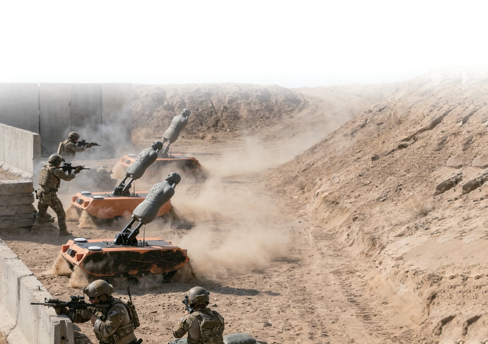

01 / SYSTEM ARCHITECTURE
One mobile, responsive adversary platform.
ARTS combines a rotating multifunction target assembly with a tracked chassis. Positioning, live-fire scoring, onboard decision logic, and counter-engagement functions work together to support repeatable training scenarios.
- Platform
- Tracked autonomous target
- Target assembly
- Rotating, multifunction
- Training role
- Live-fire and tactical simulation
- Core functions
- Positioning, scoring, onboard decisions